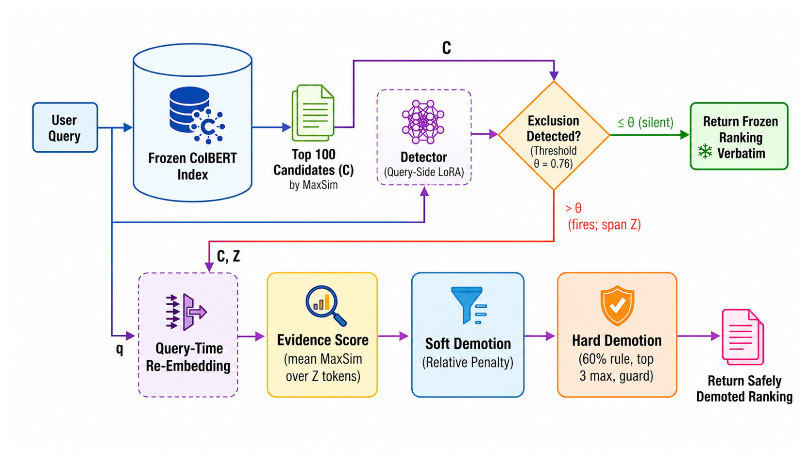
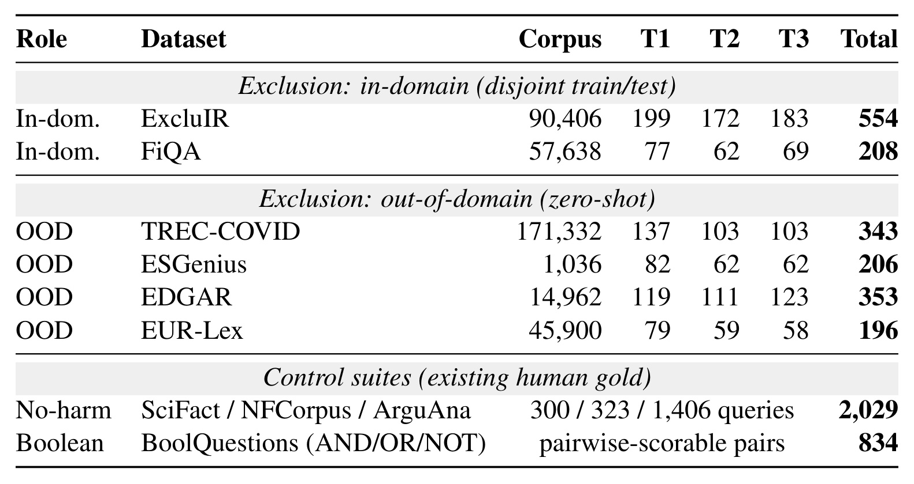
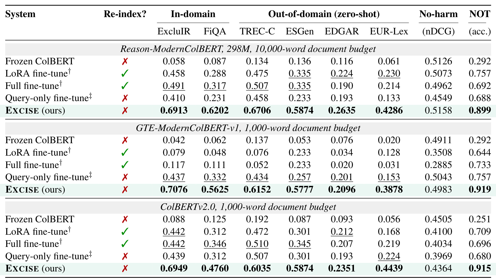
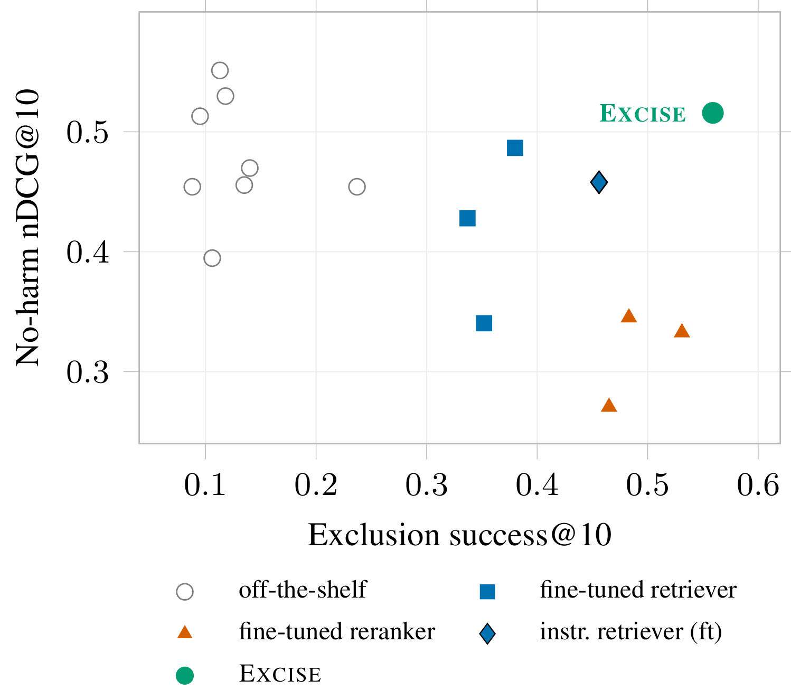
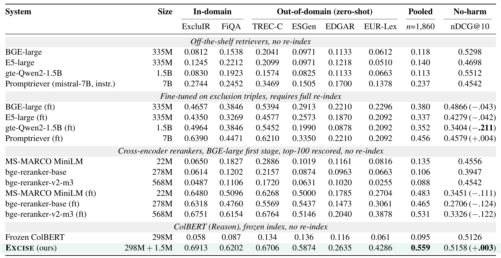
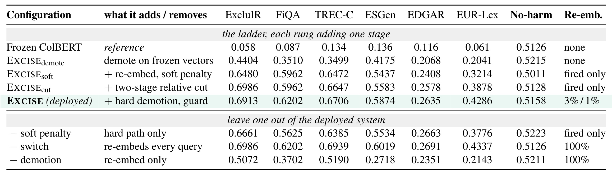
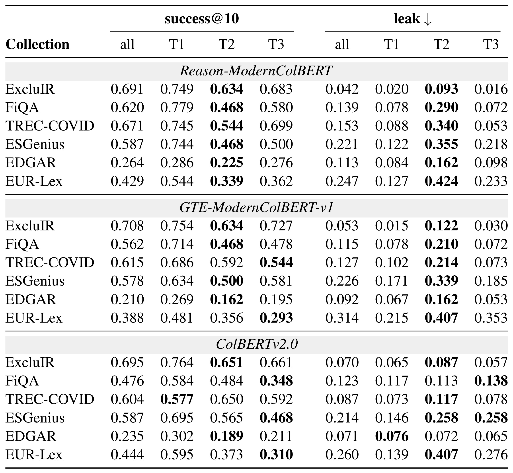

EXCISE：面向 Late-Interaction 检索的查询侧排除修复
这篇论文研究一个在搜索里很常见、却被主流 late-interaction 检索器系统性做反的问题：用户想找主题 X，同时明确不要主题 Z，MaxSim 却会因为查询里出现了 Z 而奖励覆盖 Z 的文档。论文由 University of Innsbruck 的 Mohammed Ali、Abdelrahman Abdallah 和 Adam Jatowt 完成，2026 年 8 月 6 日公开于 arXiv:2608.05497。作者在 PDF 脚注中写明代码和数据将公开，但截至 2026 年 8 月 10 日，本轮没有核验到可访问的独立仓库 URL，因此开源状态只能记为“论文承诺公开，具体链接未验证”。
Late-interaction 检索把每个查询词的最佳匹配都以正号相加，因此用户越明确写出“不想要的主题”，覆盖该主题的文档反而越可能被推高；修复这种结构性反转若依赖改动文档编码，又会带来全库重建与普通检索退化。
1. 背景和问题
1.1 “不要 Tesla”为什么反而把 Tesla 推到第一名
ColBERT 一类 late-interaction 检索器不像单向量双塔那样把整个查询和文档各压成一个向量，而是为每个 token 保留上下文化向量。查询中的每个 token 都在文档 token 中寻找最高相似度，再把这些最高值相加。这样既保留了细粒度匹配，也允许使用冻结的文档索引做高效检索。但它暗含一个符号假设：查询里出现的每个 token 都是“想要更多”的正证据。对于“electric cars, but not Tesla”，electric、cars 和 Tesla 的匹配都被正向累加；Tesla 文档既能匹配电动车，也能把 Tesla 这一组 token 匹配得极强，于是它不只是被召回，还可能被排到第一。
原文把这个现象称为 exclusion inversion。设查询为 (q)，文档为 (d)，冻结编码器给 token (t) 和 (u) 的 L2 归一化向量分别是 (v_t) 与 (v_u)，ColBERT 的打分为：
符号解释：(t\in q) 是查询 token，(u\in d) 是候选文档 token，〈(v_t,v_u)〉 是两者内积；内层最大值选出每个查询 token 在文档中的最佳匹配，外层求和则把所有查询 token 的贡献以同一正号合并。问题不在某个模型偶然没学好，而在求和结构没有“这个 span 应当取负”的通道。
把查询拆成想要的部分 (q_X) 和排除部分 (q_Z)，令 (g) 为只覆盖 X 的 gold 文档，(n) 为同时覆盖 X 与 Z 的 confusable negative。论文把 wanted-topic 上 (n) 相对 (g) 的差记为 ε，并把 (n) 在每个 exclusion token 上的平均优势记为 δ，得到命题 1：
符号解释：ε 等于 (S(q_X,n)-S(q_X,g))，衡量两个文档在用户真正想要的主题 X 上谁更相关；δ 衡量负文档在排除主题 token 上的平均匹配优势；−(q_Z)− 是排除 span 的 token 数。当 δ 为正时，排除描述越长，−(q_Z)−δ 越可能压过 gold 在 X 上的优势。这个等式是 MaxSim 加法的代数结果，不等同于“每条查询都必然反转”；实证上，554 条 ExcluIR 测试查询中有 57.8% 出现 (n) 高于 (g)，排除 token 达到 11 个以上时平均差为 +0.536，而 1-3 个 token 桶只有 +0.004，方向与命题一致但并非单调。
1.2 为什么“换一个 readout”不够
一个自然反问是：错误会不会只发生在最终 MaxSim 分数，冻结 token 表示本身其实已经包含足够的排除信息？论文做了两类诊断。第一类是在不同编码层以及最终 128 维投影上训练 supervised probe，区分 gold 与 confusable negative；准确率只在 0.51-0.57，接近 0.50 随机水平。第二类尝试九种测试时干预，包括 BM25-Z 稀疏降权、位置词法规则、token dropping、对比 late interaction、子空间正交化、negative-centroid feedback、learned readout gate 和 Z-conditional re-embedding。它们共同的薄弱处是：规则可以在已知 Z 时打分，却仍然要先知道查询究竟排除了什么。
这个区分很关键。若把 oracle Z 直接交给稀疏 BM25-Z 规则，ExcluIR success@10 可达 0.6588；换成 detector 预测的 Z 后降到 0.5253。plain MaxSim(Z) demotion 在 oracle Z 下从冻结的 0.0578 提到 0.5975，说明一旦排除主题被正确识别，降权本身并不需要复杂学习。真正难的是从查询语义里恢复 Z，尤其是没有 not、without、except 等词法提示的隐式表达。EXCISE 因而把学习限制在查询侧：让小模块识别“排除发生了、排除的是谁”，把候选降权交给无参数规则。
1.3 评价目标不是普通相关性
论文的主指标 success@10 要求 gold 进入前十，同时前十中不能留下违反排除约束的文档；hit@10 只看 gold 是否进入前十；leak 看至少一个 excluded document 是否仍在前十，越低越好。普通检索质量则用没有排除约束的 SciFact、NFCorpus、ArguAna 上的 nDCG@10 衡量。success@10 上升回答“排除有没有执行成功”，no-harm nDCG@10 回答“普通查询是否被副作用伤害”，二者不能互换。一个系统完全可能通过粗暴删除提高排除成功，却把正常结果一起删掉；也可能保持 nDCG 不变，却从未正确处理 NOT。
标准修复各有代价。全文或 LoRA 微调文档编码器需要重编码全库，模型每次更新都伴随索引迁移；query-only 微调虽能复用索引，却没有专门的抑制算子；cross-encoder 对每个查询的每个 shortlist 候选做联合前向，普通查询也要付成本；instruction retriever 依赖更大的指令模型，也缺少“无排除则逐字返回冻结排序”的结构保证。论文的目标不是宣布这些路线无效，而是寻找一个更窄的部署点：冻结 first-stage index，只在检测到 exclusion 时临时处理 100 个候选，并让无排除查询直接旁路。
2. 方法
2.1 查询侧开关：检测排除主题
EXCISE 的查询时流程严格按 Detection、Re-embedding、Demotion 三个阶段展开。首先用冻结 ColBERT 做 first-stage top-100；随后 detector 只读取查询，给每个 content token 输出属于 excluded span 的概率。detector 是 rank-8 LoRA，作用在 backbone 最后六层，并接一个线性 token head。span score 是查询 content token 概率的最大值，超过共享阈值 θ=0.76 才触发；没有触发时直接返回冻结 top-100 的原顺序，adapter 和 demotion 都不运行。这个 switch 把“普通查询无伤”从希望模型学出来的经验性质，变成查询路径上的显式分支。
训练 detector 不能只喂“X but not Z”正例，否则模型会把 not 或较长查询当捷径。论文为同一主题构造最小对：正例可写“A and B but not C”或不带否定词的“A and B, with C already covered”，负例是“A and B and C”；两者共享主题，仅 exclusion intent 不同。正 span 只标排除主题中不与 wanted topic 重叠的 content token。作者还按“长/短 × fire/no-fire”做 2×2 长度平衡。只用排除对时，detector 把“长查询”当 fire 信号，ArguAna nDCG 下降到 0.259；加入完整平衡后，长、短 fire recall 分别为 0.953 与 0.960。这里 detector 学的不是固定否定词表，而是从查询语用中恢复 exclusion span。

Figure 1 把“冻结索引”和“查询侧学习”的边界画得很清楚。用户查询先经过 Frozen ColBERT Index 取得 (C)，即 MaxSim top-100；同一查询进入 query-side detector。绿色分支表示 score 不超过 θ 时把 frozen ranking verbatim 返回，这不是重新打分后碰巧相同，而是跳过后续路径。红色分支把候选集 (C) 与检测 span (Z) 送入 query-time re-embedding；之后先计算对 Z 的 mean-MaxSim evidence，再做 relative soft demotion，最后才是 60% 规则、最多三项和 guard 约束的 hard demotion。图中只有 detector 与 re-embedding adapter 是学习模块，evidence 与两级降权是显式算子；文档全库不被新 adapter 扫过，临时处理范围由 top-100 shortlist 锁死。这一布局也解释了为什么 detector 漏报的故障方向相对安全：它会退回原冻结排序，而不是进入一个不确定的降权流程。
2.2 冻结索引上的临时重嵌入
detector 识别出 Z 后，exclusion adapter 重新编码查询、Z 与 shortlist 中每个候选，生成带波浪号的临时向量与分数。它同样是轻量 LoRA；两个查询侧模块合计约 1.5M 参数，相对于 Reason-ModernColBERT 的 298M backbone 很小。adapter 使用 1,884 个 exclusion triples 训练三轮，目标里包含 exclusion contrast，使“同时覆盖 X 与 Z 的负文档”和“覆盖 X 但避开 Z 的 gold”在适配空间中更易分开。与全文微调不同，训练结束后不把 adapter 写入文档主索引，也不改变冻结 first-stage 的召回。
“查询侧”不代表完全不编码文档，而是指训练能力与持久化索引都留在查询路径，触发后只对 shortlist 做临时文档重编码。adapter 的文档表示只依赖文档和 adapter，不依赖当前查询，因此系统可以缓存曾被触发查询访问过的候选编码；索引变更时再清空有限缓存。这样既不是第二套全库索引，也不是每个 query 都从零编码 100 篇文档。边界同样明确：若 gold 根本不在 top-100，后续重嵌入和降权都无法召回它。EDGAR 的 recall@100 只有 0.479，正是论文在该集合上增益较窄的主要原因。
2.3 相对证据、软惩罚与受限硬降权
重嵌入后，EXCISE 不直接把 detector score 当文档惩罚，而是为每个候选 (d_i) 计算其覆盖 Z 的 evidence。对 Z 中每个 token，取它与候选 token 的最大相似度，再对 Z token 求平均：
符号解释：(e_i) 是第 (i) 个 shortlist 候选的排除证据；(Z) 是 detector 找到的排除 span；波浪号表示该向量由 exclusion adapter 在查询时重新计算。对 Z token 求平均而非取单一最大值，是为了避免一个偶然高相似 token 就把有效 gold 当成“覆盖整个排除主题”。附录的 pure maximum 会把 EUR-Lex success@10 从 0.4286 压到 0.2653，说明长法律文档的词汇重叠尤其容易触发这种误伤。
软惩罚只作用于 evidence 超过 shortlist 相对阈值的候选：
符号解释：(S(\tilde q,\tilde d_i)) 是适配空间中的 late-interaction 分数；λ=0.97 控制惩罚强度；ReLU 令低于 cutoff (c) 的候选惩罚为零。它不会给任何候选增加正奖励，而是仅对 exclusion evidence 的异常高值做连续降分。论文明确说 λ 是相关性与 suppression 的运行点，不存在由 success@10 单独定义的无条件最优值。
cutoff 不是跨查询共享的固定 evidence 门槛，而由当前 shortlist 自适应计算：
符号解释：μ(−e−) 与 sd(−e−) 分别是 top-100 全部候选 evidence 的均值和标准差，κ=0.5 是异常宽度。长查询可能使所有候选都与 Z 共享词汇，绝对分数普遍偏高；相对 cutoff 只处罚从本 query 分布中真正突出的候选。若 shortlist 最大 evidence 低于安全地板 τ=0.35，则认为没有真实排除证据，完全关闭 demotion 并返回重嵌入排序。候选少于四个时，均值和标准差估计退化，算法回退 absolute rule；BoolQuestions 的两三个候选全走这个分支。
论文进一步给出 soft penalty 的排序不变条件。令 (p_i=\lambda\operatorname{ReLU}(e_i-c))，Δ 是重嵌入排序中相邻候选的最小分差，则：
符号解释：左侧是候选间惩罚的最大 spread；若它小于原排序中最小相邻 score gap Δ，减去惩罚后不可能让任何相邻项交叉，所以顺序保持。这个命题解释的是误触发时 evidence 近似平坦为何可能无伤，只覆盖 soft penalty，不保证 hard demotion。论文没有把两者混为一谈：hard path 会选 (e_i\ge\phi\max_j e_j) 的候选，φ=0.6，按 evidence 最高优先，最多删除三项；guard 保护“当前排名最高、但不是 evidence 最大”的候选。直接保护 rank-1 反而会保住 exclusion inversion 推到第一的 confusable negative，因此 guard 必须避开 evidence argmax。
2.4 冻结索引与查询时成本
在单张 H100、warm index 的测量中，冻结 first stage 为 72.3ms；detector 每条查询固定增加 12.7ms，只有触发时才额外支付 15.1ms 的 top-100 重嵌入、重排与 demotion。以业务流量中 detector firing rate ρ 表示，期望额外开销为：
符号解释：ρ 取 0 到 1；前一项是每条 query 都运行的 detector，后一项是只在 fire query 上发生的 shortlist 路径。最坏 ρ=1 时总额外开销 27.8ms，端到端约为冻结延迟的 1.4 倍。15.1ms 中 87% 来自候选文档 adapter encoding，因此这是缓存进入稳态后的数字；cold cache 会更慢，直到 shortlist 重叠带来复用。附录还显示 (k=50) 与 (k=100) 在 ExcluIR 的差为 +0.018、95% 区间 [−0.005,+0.042]、(p=0.156)，说明减半 shortlist 可能把一次 fire 的总额外开销降到约 21ms，但部署配置仍是 100，不能把探索性结论写成已采用优化。
3. 实验结果
3.1 X-BENCH、基线与指标
X-BENCH 汇集六个 exclusion collection，共 1,860 条查询。ExcluIR 与 FiQA 提供 in-domain 训练/测试且文档池不重叠；TREC-COVID、ESGenius、EDGAR、EUR-Lex 完全留作 zero-shot。每条查询分三档：T1 有 not、without 等显式 cue；T2 不含排除词，靠“already covered”之类语用表达排除；T3 同时排除两个主题，每个主题对应独立 confusable negative。短、长查询形态也被保留，以检验 exclusion token 变长是否加重 inversion。
数据构造先在冻结 ColBERT 空间挖共享 wanted topic、但额外覆盖 Z 的 confusable pair，再经过九个 admission gate，包括 gold 的 top-100 round-trip、BM25 与 ColBERT 难度、Z 在 negative 中且不在 gold 中、去重、compound 的 multi-Z 覆盖、与 MS MARCO/语料的泄漏检查、paraphrase safety 以及仅看 query 的 exclusion judge。生成由 GPT 系列完成，admission judgment 用 Llama-3.3-70B；独立 Qwen2.5-72B 在 288 条分层样本上同意 94.4%，两名外部博士生对 150 条样本的 Cohen's κ 为 0.85、与标签一致率 91.3%。T2 的独立模型/人工一致率分别只有 83.3%/84.0%，这既显示隐式排除更难，也提醒 benchmark 有主观边界。

Table 9 让实验口径一眼可核对。六个排除集合的 T1/T2/T3 数量相加分别得到 ExcluIR 554、FiQA 208、TREC-COVID 343、ESGenius 206、EDGAR 353 和 EUR-Lex 196，总计正好 1,860；其中前两项是 in-domain，后四项是从训练完全隔离的 OOD。表底另列 2,029 条普通检索查询与 834 个 Boolean 可成对样本，说明作者没有用同一个指标兼任所有目标：exclusion collection 检验“找对且排干净”，no-harm suite 用人类相关性标注检验普通 nDCG，BoolQuestions 分开测 AND、OR、NOT。语料规模从 ESGenius 的 1,036 到 TREC-COVID 的 171,332，文档长度又从短摘要延伸到 EDGAR 长文件，因此结果既包含领域迁移，也混入 first-stage recall 与窗口数量差异，后续必须结合预算控制阅读。
三个 backbone 是 Reason-ModernColBERT、GTE-ModernColBERT-v1 与 ColBERTv2.0；每个都与自己的 frozen index、需要重建索引的 LoRA/full fine-tune、以及复用 frozen index 的 query-only adapter 对比。所有 trainable system 共享 1,884 个 triples、训练三轮，adapter rank 固定为 8，学习率用按 positive document id 分组的 held-out split 选择。Reason 默认每文档 10,000 词、512 词窗口；GTE 与 ColBERTv2 默认每文档 1,000 词、200 词窗口。论文既报各自部署预算，也把预算向上和向下双向拉齐，并把外部系统重跑到相同 10,000 词口径。
3.2 三骨干、六语料的主结果

Table 1 的正确读法是每个 backbone band 内部比较，而不是跨 band 直接比绝对 nDCG。Reason 上，Frozen ColBERT 在 ExcluIR success@10 只有 0.058，EXCISE 达 0.6913；FiQA、TREC-COVID、ESGenius、EDGAR、EUR-Lex 分别为 0.6202、0.6706、0.5874、0.2635、0.4286，全部高于同 band 的 frozen、LoRA、full fine-tune 与 query-only。GTE 的 ExcluIR 甚至从 frozen 0.042 到 0.7076，ColBERTv2 从 0.088 到 0.6949。综合三骨干与六集合，EXCISE 在 18 个 cell 都是最高点估计，15 个相对最强基线至少领先 0.09；余下三个都是 EDGAR，论文只称“no worse”，其中短骨干的 paired bootstrap (p=0.698) 与 0.151，并没有统计上可分离的胜利。这个保守表述很重要，不能把“18 个点估计最高”改写成“18 个显著胜出”。
表中最后两列必须拆开解释。Reason 的 no-harm mean nDCG 从 frozen 0.5126 到 EXCISE 0.5158，实验分辨不出有害变化；GTE 从 frozen 0.4911 到 0.4983，ColBERTv2 则从 0.4505 到 0.4364，约降 0.014，所以“保持 frozen baseline”对最强 Reason 骨干成立，不能泛化成三个 backbone 都完全不掉。Boolean NOT accuracy 则从 0.292、0.292、0.251 分别升到 0.899、0.919、0.915，即事实包概括的约 0.25-0.29 到 0.90-0.92。AND 与 OR 原本就在 0.93 以上，EXCISE 后最多下滑 0.067；这是 small shortlist 下 absolute soft rule 的副作用，不是排除成功的一部分。
双向预算控制进一步限制了可解释范围。把 GTE 与 ColBERTv2 提到 10,000 词时，EXCISE 在 18 个 cell 中 16 个最高，两个例外仍是 EDGAR；把 Reason 降到 1,000 词时则 18 个全部最高。长 EDGAR 文件在短窗口下会产生更多 chunk，每个文档取最佳 chunk 等于给长负文档更多偶然匹配机会。降低 Reason 预算反而把 EDGAR success 从 0.2635 提到 0.3173，因为 chunk 数减少；这说明 EDGAR 的难点不仅是 exclusion detector，还包括 pooled first-stage 的长度偏置。
3.3 普通检索无伤控制与外部系统比较

Figure 2 把两个不能互换的目标放在同一平面：横轴是 1,860 条排除查询 pooled success@10，纵轴是 SciFact/NFCorpus/ArguAna 的 mean no-harm nDCG@10。灰色空心点是 off-the-shelf，通常保持较高普通相关性却几乎不懂 exclusion；蓝色方块与橙色三角是 fine-tuned retriever/reranker，横向显著右移时往往纵向下落；指令 retriever 的蓝色菱形处于中间。绿色 EXCISE 点位于右上，说明它不是只靠更激进删除把 exclusion 指标拉高，而是在 matched budget 下同时保持 Reason frozen index 的普通检索水平。图证明的是这一组系统中的经验 frontier，而不是所有可能架构的定理；Promptriever fine-tune 的 no-harm 还略增 +0.004，只是 exclusion pooled 0.456 仍低于 EXCISE。
论文把外部对照扩到 dense retriever、7B instruction retriever 与 cross-encoder reranker。公平点主要有三项：各系统使用自己的索引或 first stage；微调行都使用同一 1,884 exclusion triples；文档被分成 350 词 passage 并 max-pool 到 10,000 词预算。若只按发布配置截断前 512 token，长文档中最多 96.4% 的文本不可见，excluded content 也可能恰好被截掉，使 cross-encoder 看起来 leak 更低。因此正文结论以 Table 13 的 matched-budget arm 为主，而不是以附录的截断表为主。

Table 13 中，off-the-shelf BGE/E5/gte-Qwen2 pooled success 只有 0.113-0.140，Promptriever 为 0.237，三种未微调 cross-encoder 为 0.088-0.135，说明模型做大或联合编码本身并不自动提供 suppression。用相同 triples 微调后，最佳外部系统是 568M bge-reranker-v2-m3，pooled 0.531；EXCISE 为 0.559，最近差 +0.028，paired bootstrap (p=0.025)。但该 reranker 的 no-harm nDCG 从 0.4542 降到 0.3326，差 −0.122；三种 fine-tuned reranker 都损失 0.111-0.124。Promptriever fine-tune pooled 0.456、no-harm +0.004，显示 trade-off 并非逻辑必然，却仍在六集合全部落后于 EXCISE。表的 pooled 列是跨 1,860 查询做显著性检验的主列，单集合样本量较小；不能仅凭某一列点估计宣布普遍优胜。
输入预算的敏感性也揭示两个模型族的不同故障。cross-encoder 读到更多窗口后能看到原先被截掉的 excluded content，leak 往往上升；单向量 dense retriever 对每个 passage 池化，一个长文档获得更多“幸运最大值”，gold 与 negative 可能一起被挤出 top-10。EXCISE 的 ColBERT first stage 也继承后一个长度效应，所以冻结索引并不等于没有上游偏差。对 no-harm 而言，作者还用等量 SciDocs retrieval pair 重训损失最深的 gte-Qwen2；其 mean nDCG 从不 replay 的 0.3404 进一步降到 0.3093，说明这一种 rehearsal 配方未能修复灾难性偏移，但不能外推为所有 replay 都无效。
3.4 组件消融、分层难度与效率边界

Table 19 上半块是 cumulative ladder，不能把相邻两行误解为独立 ablation。Reason 的 ExcluIR 从 Frozen 0.058 开始，仅用冻结向量 demote 达 0.4404；加入 re-embedding 与 soft penalty 达 0.6480；加入 two-stage relative cut 达 0.6986；最后 hard demotion 与 guard 后为 0.6913。最后一步看似损失 0.0073 success，却把 leak 从 0.045 降到 0.042，代表作者在“gold 进前十”和“excluded document 清出去”之间选择更安全运行点。no-harm 在 soft rung 曾降到 0.5011，relative cut 恢复到 0.5128，正说明相对证据不是装饰，而是把强 suppression 限制在 shortlist outlier 上。下半块才是 leave-one-out：去掉 soft penalty，ExcluIR 降到 0.6661；去掉 demotion，只重嵌入降到 0.5072；去掉 switch 稍提高 exclusion，却让 100% 查询重嵌入，失去按需成本与结构旁路。
设计替换提供了更细证据。对 Z token 取 maximum、top-2 mean 都比全量 mean 更易把偶然词汇重叠当排除证据；mask-Z 只在 wanted tokens 上计相关性也在六列全部下降。hard-demotion cap 从一到三、φ 在 0.8-0.9 的变化落在样本噪声内，说明资格阈值通常先于数量 cap 绑定。调 κ 时，ExcluIR-train 全网格 spread 0.0072 小于两倍 binomial SE 0.0346，FiQA-train spread 0.0725 高于 0.0400，两个来源并不一致；部署 κ=0.5 是校准点，不应描述为在 pooled grid 上找到的全局最优。

Table 20 展示剩余误差主要集中在 cue-free T2。Reason 上，ExcluIR 的 T1/T2/T3 success 分别为 0.749/0.634/0.683，leak 为 0.020/0.093/0.016；FiQA 的 T2 success 0.468、leak 0.290，比 T1 的 0.779/0.078 明显更差；EUR-Lex T2 leak 达 0.424。跨三骨干六集合，T2 在 18 个 cell 中 16 个 leak 最高，在 12 个 success 最低。它不是简单的 not 检测，因为 569 条 T2 中只有 2 条出现 cue list 里的词，且那两个 not 也不直接标记 exclusion。T3 同时排两个主题，理论上更复杂，却因常带 neither/nor 或一显式一隐式结构，某些数据上反而比 T2 容易。这张表支持“detector 是主要学习瓶颈”的主张，同时也把方法最薄弱处暴露出来：语用排除仍比显式否定难得多。
效率证据要结合缓存与 shortlist ceiling 阅读。warm H100 下最坏增加 27.8ms，且 detector 只占两小模块之一；但每次 fire 的 87% 成本来自候选编码，cold cache、低 shortlist 重叠或更长文档都会改变实测。更关键的是，降权只能重排已召回候选：ExcluIR、FiQA、TREC-COVID、ESGenius、EUR-Lex 的 recall@100 为 0.942、0.942、0.921、0.990、0.893，而 EDGAR 只有 0.479。EDGAR 的 success 低不是 hard demotion 不够狠；在 gold 不可达时再加惩罚只会提高误删风险。这也是论文把“排除成功”与“上游可达性”分开的原因。
4. 总结
4.1 我的判断与工程启发
EXCISE 最有价值的贡献不是再造一个更大的检索器，而是把故障定位到正确边界：MaxSim 的正加和会造成结构性 exclusion inversion，冻结向量的通用 readout 又不足以从 query 中恢复 Z；因此只训练 detector 与 exclusion adapter，把 index、first-stage recall 和显式 demotion 分开。这个分解允许系统在普通查询上直接返回 frozen ranking，在排除查询上只处理 top-100，并把“为什么被降权”落到可读 Z span 和 evidence 上。对法规检索、系统综述、RAG source filtering 等“一个不该出现的结果就很贵”的场景，这种可审计的 suppression 比只优化平均相关性更贴近风险目标。
迁移到搜索/推荐工程时可以保留三条思想。第一，约束型 query 不应只靠相关性 score 隐式吸收，可以在 query router 后挂显式 operator，并给无约束流量旁路。第二，安全阈值最好相对同一次候选分布校准，避免全局 evidence threshold 被查询长度和领域词汇漂移击穿。第三，离线评估要把 constraint success、ordinary relevance、first-stage reach 与 query-time cost 分开；只看 nDCG 或只看 suppression 都会隐藏另一侧代价。对于带“不要某品牌/题材/来源”的推荐召回，EXCISE 的 detector+shortlist operator 形状有参考意义，但本文只证明 late-interaction 文本检索，不能直接把结果当成线上推荐收益。
放到 RAG 链路中，最接近的迁移点不是生成器安全过滤，而是检索后的证据准入：查询可能要求“总结治疗方案，但不要动物实验”或“找监管文件，排除已废止版本”，若相关性召回把被排除材料送入上下文，生成器很可能继续引用它。EXCISE 提示可以让约束检测器输出可审计主题跨度，再在候选证据层做相对降权；同时还必须保留未触发查询的冻结旁路、记录被删除证据并允许人工复核。推荐系统中的负偏好也类似，但曝光目标、多样性和用户长期兴趣会让“排除”不再是静态文本主题，必须重新定义 gold、leak 与 no-harm，不能直接照搬本文的成功率。
换言之，论文给出的更像一套约束检索的接口契约：识别、召回、降权与副作用监控各自有独立责任，任何一环都不能用另一环的平均指标代替。
4.2 局限与风险
- 受 top-100 可达性限制。 EDGAR recall@100 只有 0.479，后处理无法恢复未召回 gold；要解决这一点需要 first-stage 的约束感知召回，而不只是更强 demotion。
- 诊断与修复绑定 MaxSim。 命题 1 是 late-interaction 加法的恒等式，不能不加修改地推广到单向量、生成式检索或非加性学习排序器；论文也没有比较生成式 scorer。
- 隐式排除仍弱。 T2 在大多数 cell 上 leak 最高，且独立 judge/人工一致率更低。detector 若漏报会安全退回 frozen，但用户约束仍未满足；若错报则 hard path 只能靠 floor、cap 与 guard 限损。
- benchmark 是英语、模型生成并受 ColBERT gate 偏置。 九重 gate 与人工验证提高了质量，但 round-trip/difficulty 都在 ColBERT/BM25 空间定义，外部系统的 first-stage 比较并非完全架构中立；跨语言、自然日志和真实负反馈未验证。
- no-harm 不是三个 backbone 都严格成立。 Reason 与 GTE 接近或略高于 frozen，ColBERTv2 约降 0.014；AND/OR 也有小幅损失。命题 2 只保证 penalty spread 足够小时的 soft order，不覆盖 hard demotion。
- 部署成本依赖缓存与流量。 12.7+15.1ρ ms 是 warm H100 数字，cold cache、候选重叠、文档长度、硬件与并发下的尾延迟都未完整报告。1.5M 参数小不代表端到端代价自动小。
- 复现入口尚不完整。 论文承诺公开代码和数据，但本轮未核验到具体仓库 URL；X-BENCH 生成、九个 gate、adapter 训练和缓存实现仍需等待可执行产物核对。
4.3 后续跟进
后续最值得做四件事。其一，等仓库公开后复现 Table 1 与 Table 19，重点核对 success@10 的实现、hard guard、small-shortlist absolute branch 和 paired bootstrap；这些细节决定“排干净”是否被准确计数。其二，在自然搜索日志中单独抽取隐式 exclusion，评估 detector calibration、误触发分布与跨语言迁移，尤其不能只用 T1 的高成功率推断真实用户约束已解决。其三，把 detector 与 first-stage 联动：若 query 明确排除 Z，可尝试在候选生成阶段保留更多 X-only 文档，再由 EXCISE 做可审计降权，以缓解 EDGAR 式 recall ceiling。其四，做线上 shadow test，分别记录 ρ、cold/warm cache 命中、P95/P99 延迟、普通 nDCG/业务相关指标、排除 leak 与人工申诉；只有这些指标同时稳定，才能判断查询侧 operator 是否比重建索引或 cross-encoder rerank 更适合生产链路。